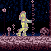

WALL JUMP


The first, most important trick is the wall jump. This alone allows you to do a lot, for example, Kraid before Hi-Jump Boots
To execute a Wall Jump, somersault into a wall, then push the direction away from the wall, and jump.
You'll know you can do it when Samus is in the pose above
The game itself actually teaches you this, via the Etecoon animals, in Green Brinstar.
SHINESPARK
Another trick the game itself teaches you is the Shinespark.
To execute a Shinespark, You first need the Speed Booster. Begin running until you turn blue. Once you turn blue, press down.
You'll know you can Shinespark, if Samus begins flashing white, like the image above. Then jump. If you want to horizontally shinespark, press a direction just before jumping.
The game itself teaches you this with the Dachora in Green Brinstar.